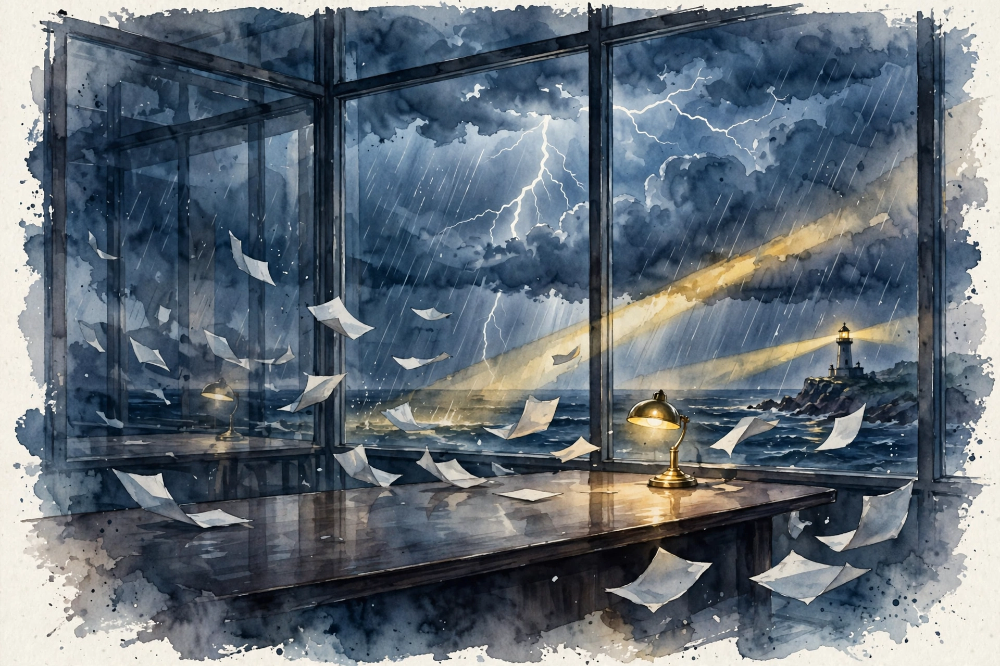

Lex Fridman track index / Companion
Lex Fridman Podcast · Episode 8 · Companion
Sam Altman on the Board Saga, Sora, and AGI
What happened in November 2023, what Sora understands about the world, why compute is the currency of the future, and who should control AGI.

Illustration. November 2023: four and a half days that nearly destroyed a company. AI-generated watercolor.

Photo. Sam Altman, CEO of OpenAI. Photo by the Office of the Prime Minister of Japan, CC BY 4.0, via Wikimedia Commons.
Watch. The official episode video. Chapter times above are proportional estimates. Use the chapter menu to follow along.
The Wisdom Index: every nugget in this companion
Source fact A claim from the episode transcript. Interpretation My read on what it means. Facts carry episode times. Times marked ~ are proportional estimates from word position, since the transcript has no timestamps. Transcripts are auto-generated captions, so chapters paraphrase rather than quote.
~00:01
The Board Saga
Source fact On Thursday November 16 and Friday November 17, 2023, OpenAI's board fired Sam Altman. He calls it "that was definitely the most painful professional experience of my life". Over four and a half days of adrenaline, little sleep, and little food, the staff threatened to leave, two board members called back Saturday, a new interim CEO was named Sunday night, and Altman returned with a new board.
The structural lesson: the old board shrank from nine members to six to three over about a year, with few experienced directors. A nonprofit board answers to nobody but itself, unlike corporate boards answerable to shareholders. Altman now wants board members hired in slates for complementary expertise, and wants the board to answer, as much as practical, to the world as a whole.
the road to AGI should be a giant power struggle
Sam Altman · ~00:05
He expected something explosive on the road to AGI and is glad it happened early: it built resilience for higher-stakes moments to come. The personal cost was a month and a half of fugue-state drift, and a changed philosophy of trust. He calls himself extremely trusting by default and dislikes what the shock did to that.
Nugget 1 · Governance
Iterate through the power struggle
What happened. Altman treats the firing as a preview of higher-stakes governance crises and uses it to redesign the board.
Why it matters. Power struggles are not bugs on the road to AGI. They are the road. Systems must be built to survive them.
The principle. Design governance for the crisis, not the calm. Test it before the stakes peak.
~00:29
Elon, Open, and the Lawsuit
Source fact On Musk's lawsuit, Altman says OpenAI started as a research lab with no idea it would need huge capital or products, and patched its structure repeatedly, each step reasonable at the time. On Musk's departure: he thought OpenAI would fail, wanted total control or a Tesla acquisition, and left when the team refused. Altman calls the lawsuit unbecoming of a builder and says he "missed the old Elon", quoting messages from others who felt the same.
On the word open: he would pick a different name with hindsight. What matters to him is that powerful tools reach people's hands for free, which he calls the most important thing OpenAI does. On open-sourcing models, he rejects the religious war: some open, some closed, nuance over battle lines. He would heavily discourage startups from copying the nonprofit-to-capped-profit path.
~00:41
Sora and World Models
Source fact Sora trains on visual patches the way LLMs train on text tokens, largely self-supervised on internet-scale data. Altman is struck by occlusions handled well: a person walks in front of an object and it is still there afterward, implying something like a 3D understanding emerging from 2D training. Weaknesses remain, like cats sprouting extra limbs, and he expects both better data and genuinely different approaches to be needed.
Release is gated on efficiency at scale and on thoughtfulness about deepfakes and misinformation. On copyright, his position: creators deserve compensation and an opt-out from style mimicry, and the economy needs a Napster-to-Spotify style reinvention for the AI era.
Nugget 2 · Capabilities
Watch what it gets right, not just wrong
What happened. Altman warns against staring at Sora's failures until you conclude it is all fake. Some of it genuinely works.
Why it matters. Weakness-spotting is cheap and feels smart. It also blinds you to the trajectory.
The principle. Study the successes as hard as the failures. The trend lives in what works.
~00:54
GPT-4 Kind of Sucks
Source fact Altman praises GPT-4, then says it kind of sucks, the way GPT-3 looks unimaginably horrible next to GPT-4. He expects the 4-to-5 delta to match the 3-to-4 delta. His job, as he frames it, is to live a few years in the future and remember today's tools will look broken from there.
On jobs, he rejects the frame. The better question is what percent of tasks AI will do: five-second tasks, five-minute tasks, five-hour tasks, five-day tasks, over lengthening horizons. People will operate at higher levels of abstraction until the change is qualitative, not just quantitative. Most YouTube videos will use AI tools in production while staying human-directed, because humans go back to humans after two days with anything cooler.
Nugget 3 · Economics
Count tasks, not jobs
What happened. Altman reframes automation anxiety from jobs replaced to tasks absorbed over expanding time horizons.
Why it matters. Jobs are bundles of tasks. The bundle survives longer than any single task inside it.
The principle. When a technology arrives, inventory your tasks by time horizon. The short ones go first.
~01:01
Context, Memory, and Q*
Source fact Context windows grew from 8K to 128K tokens between GPT-4 and GPT-4 Turbo. Altman dreams of billions: feed in your whole life and the model just knows you. Memory should be user choice all the way down, with transparency about what is kept. On Q*, the rumored reasoning project, he declines to discuss it, which Lex notes is itself an answer.
On slower thinking, he agrees the intuition is reasonable: harder problems deserve more compute, and a system should think harder about a hard proof than about today's date. How to implement it is wide open.
~01:25
Compute Is the Currency
Source fact Altman denies tweeting the $7 trillion figure, calling it a meme built on a kernel of insight. His actual claim:
compute is going to be the currency of the future
Sam Altman · ~01:26
His argument: compute is like energy, not phones. Phone markets saturate. At price X the world uses this much compute, at price Y it uses that much, because cheap intelligence gets woven into everything. The hard parts are energy first, then data centers, supply chains, and chip fabrication. His energy answer is nuclear: fission re-embraced, fusion raced toward, with Helion doing the best work in his view.
Nugget 4 · Resources
Price the input, not the device
What happened. Altman models compute demand like energy demand: the only question is how much the world uses at each price.
Why it matters. Unit markets saturate. Flow markets scale with price. Intelligence is a flow.
The principle. For a true commodity, forecast demand as a function of price, not as a number of units.
~01:38
No Ads, and Writing the Rules Down
Source fact Altman says he kind of hates ads as an aesthetic choice and likes that ChatGPT users pay and know the answers are not advertiser-influenced. He believes the business can pay for its compute without ads. On safety, he proposes writing out the model's desired behavior in public, with edge cases, so the world can tell a bug from a policy and debate the policy honestly. He cites the Gemini image-generation episode as the kind of failure this would clarify.
Interpretation The proposal shifts safety from hidden tuning to public contract. Disagreements move from vague bias claims to a concrete rule and a concrete misfire to debate.
~01:50
AGI, Power, and Who Controls It
Source fact Altman expects quite capable systems by the end of this decade, possibly sooner. His personal AGI test: a system that significantly increases the rate of scientific discovery. On power, he is blunt: no one person should control AGI, himself included. He notes the governance failure plainly, that in practice the board could not really fire him, and still does not want super-voting control. He wants governments to set rules of the road and accepts being misunderstood as seeking regulatory capture.
On existential risk from the AI itself, he says it is not his top worry right now, though that ranking shifts over time. There are many other things to get right, and the theatrical risks crowd out the slow-burn ones in public discourse.
Nugget 5 · Power
No one person holds it
What happened. The man who survived his board's firing argues the board needed the real power to fire him.
Why it matters. Power that cannot be checked is a governance failure even when it lands on the right person this time.
The principle. Design the constraint for the office, not the occupant.
~02:06
Capitalism, Simulation, and Hope
Source fact On his uncapitalized tweets, Altman traces it to his youth as an online kid on messenger, plus a genuine belief that sentence capitalization is a fading construct. He still capitalizes strategy memos. On simulation, Sora nudges his probability up a little, but it is not his top evidence. On death, he is grateful rather than afraid: what a curious, interesting time to be alive. What gives him hope is the scaffolding: no one person builds the iPhone or discovers all of science, yet everyone gets to stand on it.